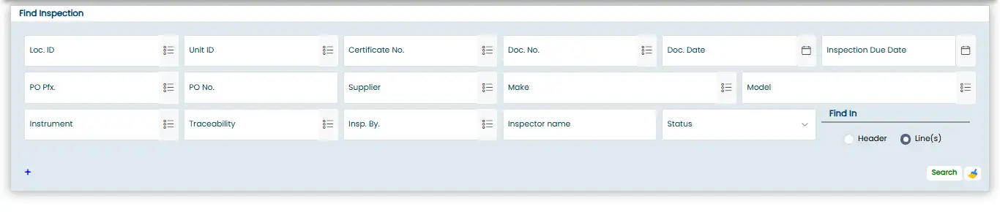
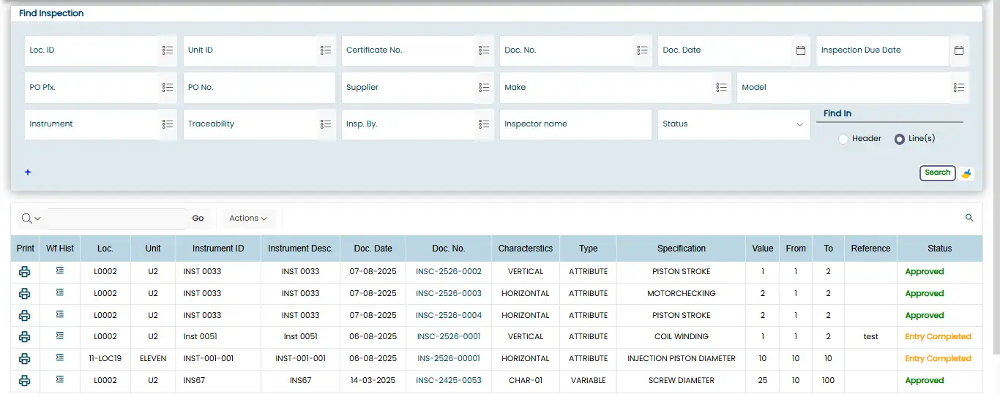
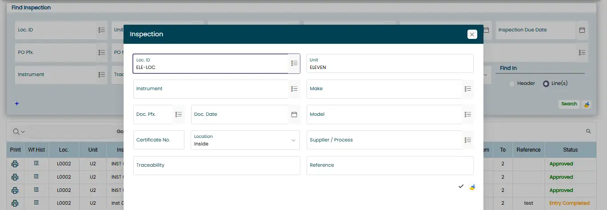
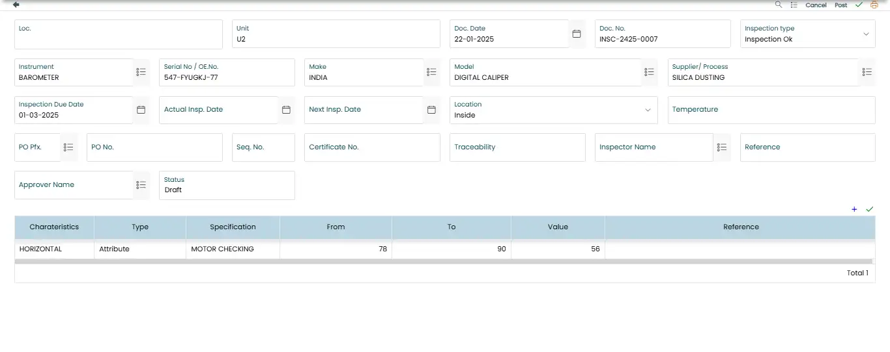

<div data-category="Quality control Management" data-title="Inspection" data-updated="December 01, 2025" data-contributors="RoadmapIT" data-breadcrumb="Home,Quality control Management,Inspection">
  <div class="page-content">
    <p>An inspection is a process of examining products, materials, components, or processes to ensure they meet predefined standards, specifications, or requirements. This screen is used to create a new Inspection.</p>

    <h5>Navigation Path</h5>
    <p class="fs-6">Quality Management \ Transaction \ Measurement System Analysis \ Inspection</p>

    
    <ul style="list-style-type: none; align-content: center">
      <li class="mouse-icon">Search screen displays the list of inspection documents with relevant details and status.</li>
      <li class="mouse-icon">User can filter the respective documents by entering the search parameters at the header.</li>
    </ul>

    
    <ul style="list-style-type: none; align-content: center">
      <li class="mouse-icon">On clicking search button, system displays results relevant to the search parameters entered.</li>
      <li class="mouse-icon">
        Using
        
        icon, entered search parameters can be cleared.
      </li>
      <li class="mouse-icon">
        To close the screen, use
        <i class="bi bi-x fs-4 mx-2 text-danger"></i>
        icon.
      </li>
      <li class="mouse-icon">
        Click the
        <i class="bi bi-plus fs-4 mx-2 text-primary"></i>
        Add button to create a new Inspection document.
      </li>
    </ul>

    
    <ul style="list-style-type: none; align-content: center">
      <li class="mouse-icon">Select / Enter the Loc ID.</li>
      <li class="mouse-icon">Select / Enter the Instrument.</li>
      <li class="mouse-icon">Select Make.</li>
      <li class="mouse-icon">Select Doc Pfx.</li>
      <li class="mouse-icon">Select Doc Date.</li>
      <li class="mouse-icon">Select Model.</li>
      <li class="mouse-icon">Enter Certificate No.</li>
      <li class="mouse-icon">Select the Location.</li>
      <li class="mouse-icon">Enter Traceability and Reference.</li>
      <li class="mouse-icon">
        Click on
        <i class="bi bi-check-lg fs-4 mx-1 text-success"></i>
        to create a new document.
      </li>
    </ul>

    
    <ul style="list-style-type: none; align-content: center">
      <li class="mouse-icon">Select the Model.</li>
      <li class="mouse-icon">Select the Actual Insp. Date.</li>
      <li class="mouse-icon">Select the Next Insp. Date.</li>
      <li class="mouse-icon">Select the Inspector Name.</li>
      <li class="mouse-icon">Select the Approver Name.</li>
      <li class="mouse-icon">
        Click the
        <i class="bi bi-plus fs-4 mx-2 text-primary"></i>
        button to add a new characteristic.
      </li>
      <li class="mouse-icon">Select the Characteristics.</li>
      <li class="mouse-icon">Select the Type.</li>
      <li class="mouse-icon">Select the Specification.</li>
      <li class="mouse-icon">Enter From, To, and Value.</li>
      <li class="mouse-icon">
        Click on
        <i class="bi bi-check-lg fs-4 mx-1 text-success"></i>
        to save.
      </li>
    </ul>

    
    <ul style="list-style-type: none; align-content: center">
      <li class="mouse-icon">Click Post button to send the document for approval.</li>
    </ul>
  </div>
</div>